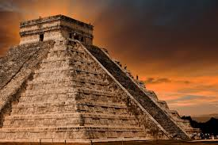

chichen itza

La legendaria ciudad maya de Chichén Itzá, Patrimonio de la Humanidad declarada por la UNESCO desde 1988 y Maravilla del Mundo desde 2007, sobresalió como centro cultural y político de la vieja civilización maya y fue uno de los asentamientos más extensos del centro-norte de la península de Yucatán.